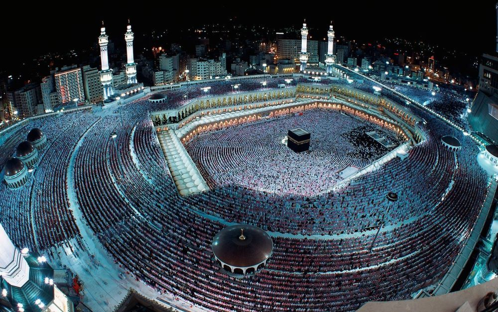
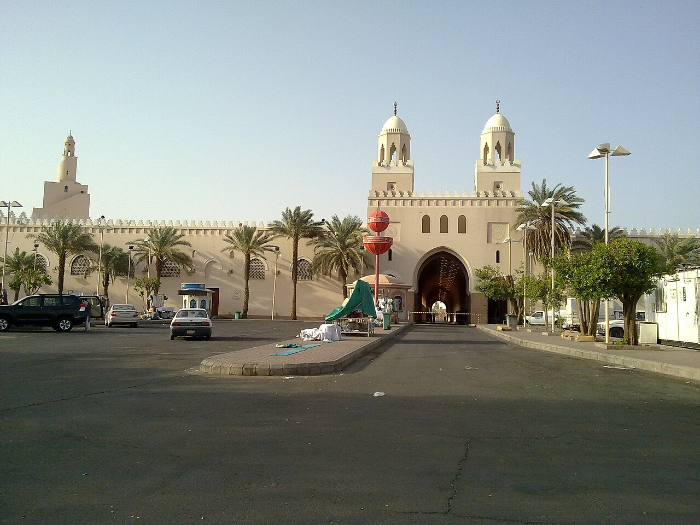
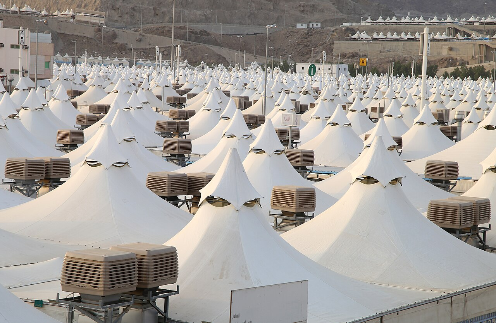
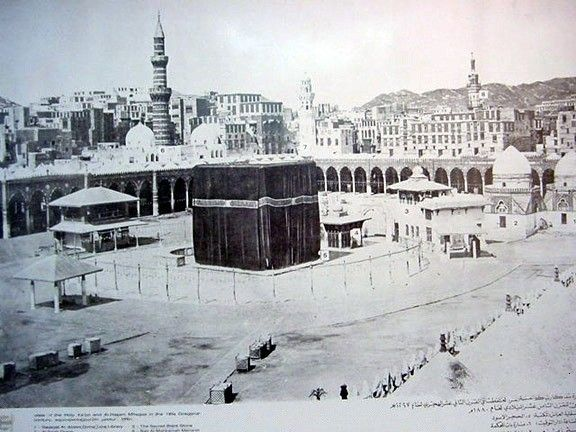
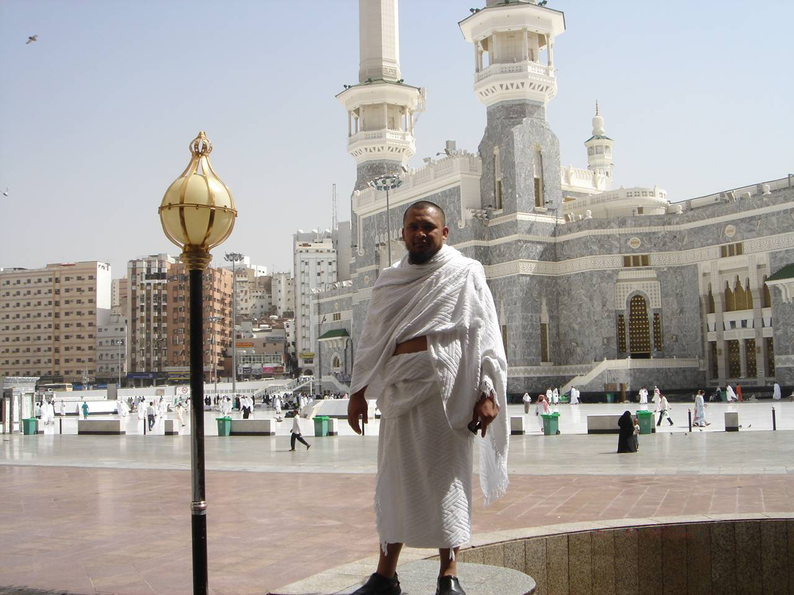
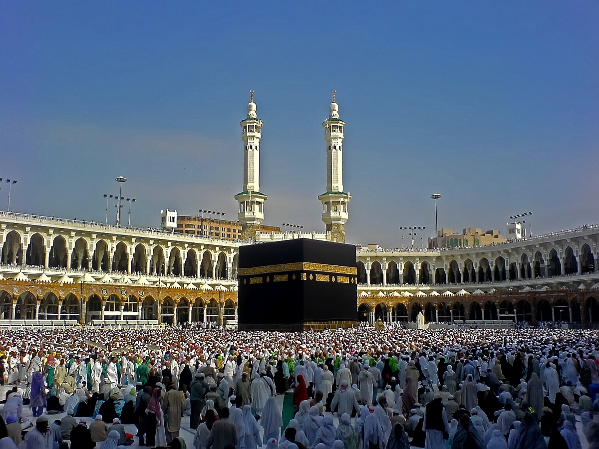
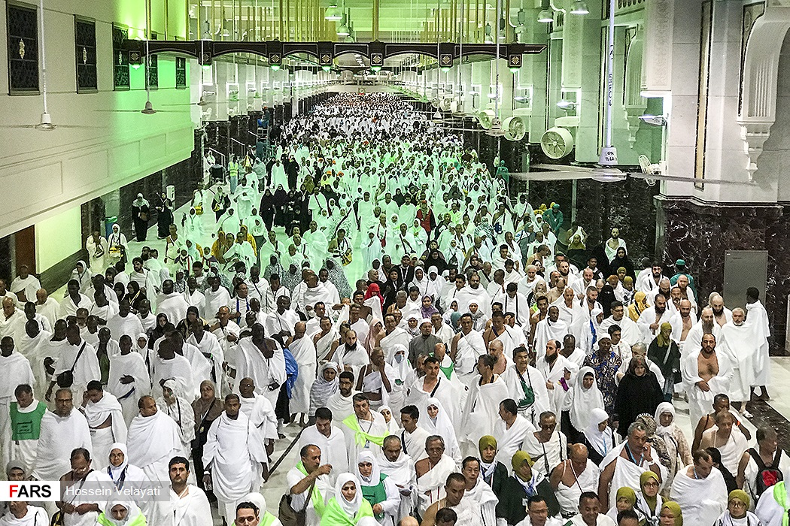
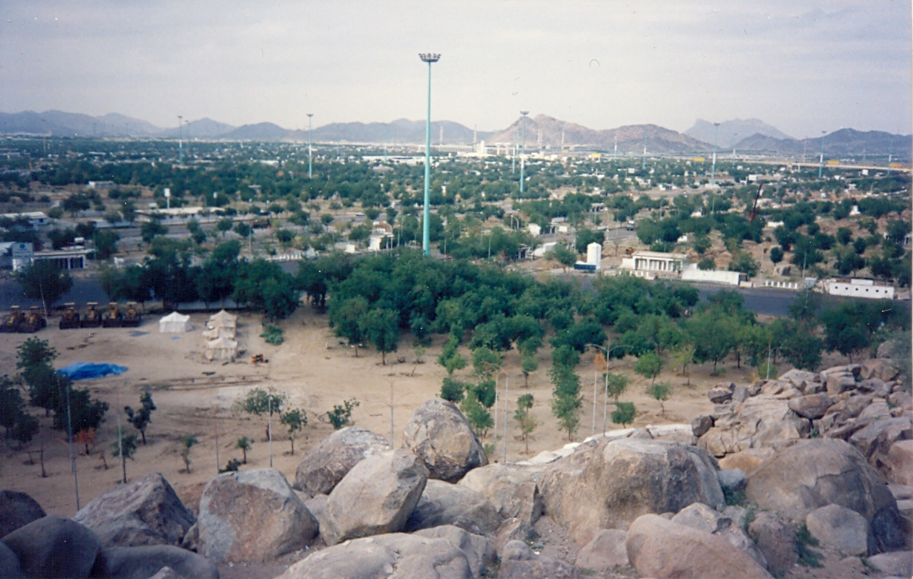
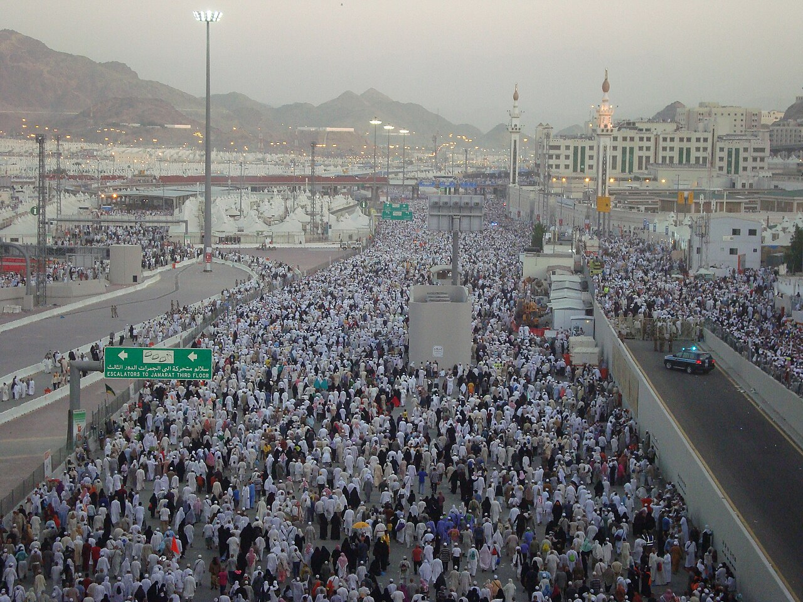

1
🎯 İmkânı olan Müslümanların ömründe bir kez yaptığı farz ibadete ne denir?
Hac, imkânı olan Müslümanların ihrama girip Arafat'ta vakfe yaparak ve Kâbe'yi tavaf ederek ömürde bir kez yaptığı farz ibadettir.
7. SINIF — 2. ÜNİTE
Din Kültürü ve Ahlak Bilgisi — İnteraktif Oyunlar
👩🏫 Hazırlayan: DKAB Öğretmeni Ayşe Yazıcı
Konu anlatımları, özetler ve sunular.
Hac ve kurban ibadeti

Hac ibadetinin ana duraklarını, gerçek yerlerinden izleyerek ünitenin genel yapısını kavra.

Aiman titi — CC BY-SA 3.0MikatNiyet edilir, ihrama girilir. Fahad Faisal — CC BY-SA 4.0ArafatVakfe yapılır (haccın rüknü).
Fahad Faisal — CC BY-SA 4.0ArafatVakfe yapılır (haccın rüknü).
Seeley International — CC BY-SA 4.0Müzdelife – MinaGece vakfesi, şeytan taşlama, kurban.
Farazbinyusuf — CC0Mekke’ye DönüşVeda tavafı ile hac tamamlanır.Hac, imkânı olan Müslümanların zilhicce ayında ihram giyerek, Arafat'ta vakfe yaparak ve Kâbe'yi tavaf ederek yaptıkları farz ibadettir. Haccın Hz. Âdem zamanında başladığı, Hz. İbrahim ile oğlu Hz. İsmail'in Kâbe'yi yeniden inşa ettiği bildirilir. Hac, Hicret'in 9. yılında farz kılınmıştır ve İslam'ın beş şartından biridir. Haccın farzı üçtür: ihrama girmek, Arafat'ta vakfe yapmak, Kâbe'yi tavaf etmek.
Haccın bir kişiye farz olabilmesi için bazı şartlar aranır: akıl-bâliğ (ergenlik çağına ermiş ve aklı başında) olmak, hür olmak ve istitaat sahibi olmak; yani bedence yolculuğa dayanacak kadar sağlıklı olup yol ve geçim masraflarını karşılayacak maddi imkâna sahip bulunmaktır. Kur'an-ı Kerim'de Âl-i İmrân suresinin 97. ayetinde, yoluna gücü yetenlerin Kâbe'yi ziyaret etmesinin Allah'ın insanlar üzerindeki bir hakkı olduğu bildirilir. Peygamberimiz de bir hadisinde, kötü söz ve davranışlardan sakınarak haccını hakkıyla yerine getiren bir kimsenin, annesinden doğduğu gündeki gibi günahlardan arınmış olarak döneceğini müjdelemiştir.
🤔 Merak Ettin mi?
Zemzem suyu, Hz. Hacer'in oğlu Hz. İsmail için su ararken ortaya çıkan bir Allah mucizesidir.
Bu konunun alt başlıkları ve aralarındaki ilişki
 Ali Mansuri — CC BY-SA 2.5BireyselArınma ve tövbeFahad Faisal — CC BY-SA 4.0ToplumsalEşitlik ve kardeşlik
Ali Mansuri — CC BY-SA 2.5BireyselArınma ve tövbeFahad Faisal — CC BY-SA 4.0ToplumsalEşitlik ve kardeşlikHerkesin aynı ihramı giymesi hangi mesajı verir?

Mikat'ta ihrama girilir, telbiye duası okunur. Kâbe'nin etrafında bir kez dönmeye şavt, yedi kez dönmeye tavaf denir. Say, Safa ile Merve arasında yapılan yürüyüştür. Vakfe, Arafat'ta beklemektir. Zemzem, Hz. Hacer'e ikram edilen kutsal sudur. Hacerülesved, Kâbe'nin köşesindeki siyah taştır.
| Telbiye Duası — Okunuşu | Anlamı |
|---|---|
| Lebbeyk Allâhümme lebbeyk | Buyur Allah'ım, buyur! |
| Lebbeyke lâ şerîke leke lebbeyk | Senin hiçbir ortağın yoktur, buyur! |
| İnnel hamde ve'n-ni'mete leke vel mülk | Şüphesiz hamd, nimet ve mülk senindir, |
| Lâ şerîke lek | senin ortağın yoktur. |
Mekânlar: Kâbe (yeryüzündeki ilk mabet, Beytullah), Safa ve Merve tepeleri, Müzdelife (Arafat-Mina arası, gece vakfesi), Mina (kurban kesme, şeytan taşlama yeri), Arafat (Arife Günü vakfe alanı).
Haccın farzları dışında yerine getirilmesi gereken vacipleri de vardır: Müzdelife'de vakfe yapmak, şeytan taşlamak, tıraş olmak ya da saçları kısaltmak ve Mekke'den ayrılmadan önce veda tavafı yapmak. İhrama giren bir hacı adayının; dikişli giysi giymemesi, koku sürmemesi, tırnak ve saç kestirmemesi, avlanmaması ve kavga etmemesi gerekir; bu kurallara ihram yasakları denir. Şeytan taşlama, Hz. İbrahim'in oğlunu kurban etme emrini yerine getirirken şeytanın onu bundan vazgeçirmeye çalışması, Hz. İbrahim'in de ona taş atarak karşılık vermesiyle ilişkilendirilir; bu davranış kötülüğe ve vesveseye karşı direnmenin bir sembolüdür.
❌ Yanlış Bilinenler
❌ Bazıları kurban ibadetinin sadece hayvan kesmekten ibaret olduğunu düşünür.
✅ Kur'an'a göre kurbanın eti ve kanı Allah'a ulaşmaz; asıl ulaşan kulun takvasıdır — kurban, paylaşma ve fedakârlık bilincidir.
🌍 Gerçek Hayattan Bir Örnek
Kesilen kurban etinin üçe bölünüp (ev halkı, ihtiyaç sahipleri, komşu-misafir) paylaşılması, dayanışmanın somut bir örneğidir.
Hac ve kurban ibadetlerinin toplumumuzda pek çok yansıması vardır: Hacca giden kişiye "hacı" unvanı verilir, yolculuk öncesinde uğurlama, dönüşünde ise karşılama gelenekleri yaşanır. Kurban Bayramı'nda kesilen hayvanların derisi ve bağırsağı genellikle Kızılay gibi kuruluşlara bağışlanır; bazı vakıflar da imkânı kısıtlı bölgelerdeki ihtiyaç sahiplerine ulaştırmak üzere "vekâleten kurban" organizasyonları düzenler.
Haccın farz olma şartları
Maddi gücü olmayan birine hac farz mıdır? Cevabını gerekçelendir.
Haccın yedi aşaması, gerçek fotoğraflarıyla ve gerçekleştiriliş sırasına göre — dairesel şema, tavafın kendisinin de dairesel olduğunu ve yolculuğun Mekke’de kapandığını hatırlatır.

Rammaum — CC BY-SA 3.01. İhramMikatta niyet edilir, dikişsiz ihram giyilir.
M. Mahdi Karim — GFDL2. TavafKâbe’nin etrafında yedi kez (7 şavt) dönülür.
M. H. Velayati — CC BY 4.03. Sa’ySafâ ile Merve arasında yedi kez gidip gelinir.Fahad Faisal — CC BY-SA 4.04. Vakfe (Arafat)Arafat’ta belirli bir süre beklenir; haccın rüknüdür.
Kalamkaar — CC BY-SA 3.05. MüzdelifeGece vakfesi yapılır, şeytan taşlamak için taş toplanır.
Aiman titi — CC BY-SA 3.06. Şeytan TaşlamaMina’da cemrelere taş atılır.
Umre, hac mevsimi dışında ihramlı olarak Kâbe'yi tavaf edip Safa-Merve arasında say yaptıktan sonra tıraş olup ihramdan çıkılan ibadettir. Hac farz, umre sünnettir. Hac yılda bir kez, umre her zaman yapılabilir. Umrede vakfe, şeytan taşlama ve kurban kesme yoktur.
💭 Düşün ve Cevapla
Milyonlarca Müslümanın aynı anda, aynı kıyafetle (ihramla) Kâbe'yi tavaf etmesi, İslam'daki eşitlik anlayışını nasıl yansıtır?
👨👩👧 Ailemle Yapıyorum
Ailenle birlikte kurban bayramında komşularınıza veya ihtiyaç sahiplerine et ikram etmeyi planlayın.
Haccın yapılışı
Umre, hac gibi dört aşamada tamamlanır — ancak vakfe, Müzdelife, şeytan taşlama ve kurban yoktur.
Not: Gerçek bir tıraş/tahallül fotoğrafı için lisanslı bir Wikimedia Commons görseli bulunamadı; bu yüzden bu adımda sembolik bir çizim kullanıldı — mevcut olmayan bir fotoğraf zorlanmadı.
İki ibadetin temel farklarını, aynı başlıklar üzerinden karşılaştırarak gör.
Ortak yönleri: İkisi de ihramla başlar, Kâbe’yi tavaf ve Safa-Merve arasında sa’y içerir.

Kurban, belli hayvanları belirli günlerde ibadet niyetiyle kesmektir; vacip bir ibadettir. Kurban Bayramı'nın ilk 3 günü kesilir. Küçükbaş 1 kişi, büyükbaş 1-7 kişi, deve (5 yaş üstü) 1-7 kişi adına kesilebilir. Kurban eti üçe ayrılır: ev halkı, ihtiyaç sahipleri, komşu-misafir. Adak (nezir) bir dileğin gerçekleşmesiyle kesilen kurbandır; akika çocuk doğumunda şükür için kesilir. Alevilik-Bektaşilikte kurban kesmeye tığlama denir.
Hz. İsmail, Hz. İbrahim ile Hz. Hacer'in oğludur; kurban edilmek istenmesiyle (Saffat suresi) kurban ibadeti başlamıştır. Kâbe'yi babasıyla inşa etmiştir. Kabri Hicr-i İsmail'dedir. Enam suresi 162. ayet, namazın, ibadetin, hayatın ve ölümün yalnızca Allah için olduğunu bildirir.
Kurban kesmenin vacip olması için kişinin Müslüman, akıl-bâliğ, mukim (yolcu olmayan) olması ve dinen zengin sayılacak kadar (nisap miktarında) mal varlığına sahip bulunması gerekir. Kesilecek hayvanın da dinen belirlenen yaşını doldurmuş, sağlıklı ve kusursuz olması aranır. Kurbanın hikmeti; Allah'a yakınlaşmak, sahip olunan nimetlere şükretmek, Hz. İbrahim ile Hz. İsmail'in teslimiyetini ve sabrını hatırlamak, paylaşma-yardımlaşma bilincini güçlendirmektir; aynı zamanda imkânı olandan olmayana doğru bir kaynak aktarımı sağlayarak toplumsal dayanışmaya katkı sunar.
Kurban, tek başına bir kesim değil; paylaşmayla topluma yayılan bir ibadettir.
Merkezdeki iki ibadetten dallanan beş temel kazanım.
🔍 Derinlemesine Düşünelim
Bu ünitede öğrendiklerini derinlemesine değerlendirmek için kendine şu soruları sor:
⚖️ Ahlaki İkilem — Sen Olsaydın Ne Yapardın?
Kurban bayramında hayvan kesmek yerine parasını doğrudan bağışlamanın daha "mantıklı" olduğunu söyleyen bir arkadaşın var. Kurbanın ekonomik boyutunun yanı sıra ibadet ve dayanışma boyutunu düşünerek ona ne söylerdin?
✅ Kendimi Değerlendiriyorum
🌍 Hayatta Dene
Bugünün görevi: Bugün ailenle birlikte kurban ibadetinin paylaşma ve dayanışma boyutunu konuşun; imkânınız varsa bir yardım kumbarasına küçük bir bağış yapın.
Bu ünitede öğrendiklerini, beş soru üzerinden tek bakışta hatırla.
6 konu · 12 test · 72 soru. Bir seçeneğe tıkladığında doğru/yanlış hemen görünür, altında açıklaması çıkar.
🎯 İmkânı olan Müslümanların ömründe bir kez yaptığı farz ibadete ne denir?
🕵️ İpucu 1: Bir olaydır. İpucu 2: Hz. Âdem zamanında başladığı bildirilir. İpucu 3: Kâbe, Hz. İbrahim ve Hz. İsmail tarafından yeniden inşa edilmiştir. Bu hangi ibadetin köküyle ilgilidir?
📖 Ali, 'Hac ne zaman farz kılındı?' diye soruyor. Öğretmeni ona doğru tarihi söylüyor. Cevap ne olmalı?
✅❌ Hac, İslam'ın beş şartından biridir. Doğru mu?
🎯 Âl-i İmrân suresi 97. ayete göre Kâbe'yi ziyaret etmek neyi ifade eder?
📖 Bir hacı adayı, kötü söz ve davranıştan sakınarak haccını hakkıyla tamamlıyor. Peygamberimizin hadisine göre bu kişi nasıl döner?
🕵️ İpucu 1: Bir sudur. İpucu 2: Mekke'dedir. İpucu 3: Hz. Hacer'in oğlu için su ararkenki bir mucizeyle ortaya çıkmıştır. Bu nedir?
🎯 Kâbe'nin bir diğer adı, 'Allah'ın evi' anlamına gelen kelimedir. Hangisi?
🚫 Aşağıdakilerden hangisi Kâbe ile doğrudan ilgili değildir?
📖 Milyonlarca hacı, hiçbir ayrım gözetmeden aynı ihramla, aynı safta bir araya geliyor. Bu görüntü haccın hangi boyutunu en iyi anlatır?
🎯 Hac ve kurban ibadetlerinin ortak yönlerinden biri hangisidir?
🕵️ İpucu 1: Bir peygamberdir. İpucu 2: Kâbe'yi oğluyla birlikte yeniden inşa etmiştir. İpucu 3: Hac ibadetinin köklerinden biri onunla ilişkilidir. Bu kimdir?
🎯 Haccın farzı kaçtır ve nelerdir?
🚫 Aşağıdakilerden hangisi haccın GENEL şartlarından biri DEĞİLDİR?
🕵️ İpucu 1: Arapça bir kelimedir. İpucu 2: Bedence ve mali olarak güç yetirmek demektir. İpucu 3: Hac farz olmadan önce aranan en önemli şarttır. Bu nedir?
📖 Zeynep'in maddi gücü hacca gitmeye yetmiyor. Buna göre hac Zeynep'e farz mıdır?
✅❌ Ergenlik çağına ermemiş bir çocuğun yaptığı hac, farz yükümlülüğünü tamamen düşürür. Doğru mu?
🎯 Haccın vacipleri arasında hangisi sayılır?
🚫 Aşağıdakilerden hangisi 'hür olmak' şartının tarihsel anlamıyla İLGİLİ DEĞİLDİR?
🕵️ İpucu 1: Bir ay adıdır. İpucu 2: Hac bu ayda yapılır. İpucu 3: Kurban Bayramı da bu ayda kutlanır. Bu hangi aydır?
📖 Mehmet Bey akıl sağlığı yerinde olmayan bir yakınının hacca gidip gidemeyeceğini soruyor. Doğru cevap ne olmalı?
✅❌ Şartları taşımayan bir kişi hac yapmazsa dinen sorumlu tutulur. Doğru mu?
🎯 Yol güvenliği ve sağlık, haccın hangi tür şartlarındandır?
🕵️ İpucu 1: Bedensel bir konudur. İpucu 2: İstitaatin bir parçasıdır. İpucu 3: Yolculuğa ve ibadetlere dayanmak için gereklidir. Bu nedir?
🎯 Hac ve umrede giyilen, dikişsiz iki parçalı örtüye ne denir?
🕵️ İpucu 1: Bir sınır bölgedir. İpucu 2: İhrama girmek için bellidir. İpucu 3: Buradan sonra ihram yasakları başlar. Bu neresidir?
🚫 Aşağıdakilerden hangisi Kâbe'nin etrafında YAPILMAZ?
📖 Bir hacı, Kâbe'nin etrafında tam yedi kez dönüyor. Bu harekete ne ad verilir?
🎯 Kâbe'nin etrafında sadece bir kez dönmeye ne denir?
🕵️ İpucu 1: İki tepe arasında yapılır. İpucu 2: Yedi kez gidip gelmeyi içerir. İpucu 3: Hz. Hacer'in koşusunu hatırlatır. Bu nedir?
✅❌ Vakfe, Kâbe'nin etrafında dönmektir. Doğru mu?
📖 Hacı adayı ihrama girdikten sonra sürekli bir dua tekrarlıyor: 'Lebbeyk Allâhümme lebbeyk...' Bu duaya ne denir?
🎯 Telbiye duasının 'Lebbeyke lâ şerîke leke lebbeyk' bölümü ne anlama gelir?
🚫 Aşağıdakilerden hangisi ihram yasaklarından biri DEĞİLDİR?
🕵️ İpucu 1: Arafat-Mina arasındadır. İpucu 2: Gece vakfesi burada yapılır. İpucu 3: Şeytan taşlamak için taş burada toplanır. Bu neresidir?
📖 Hacılar, Mekke'den ayrılmadan hemen önce son bir kez daha Kâbe'yi tavaf ediyorlar. Bu tavafa ne denir?
🎯 Hac mevsimi dışında yapılan, hükmü sünnet olan Kâbe ziyaretine ne denir?
🕵️ İpucu 1: İhramla başlar. İpucu 2: Tavaf ve sa'y içerir. İpucu 3: Tıraş olup ihramdan çıkmakla biter. Bu hangi ibadettir?
✅❌ Hac farz, umre ise sünnettir. Doğru mu?
🎯 Umre ne zaman yapılabilir?
🚫 Aşağıdakilerden hangisi umrede BULUNMAZ?
📖 Fatma umresini tamamlamak için son olarak ne yapması gerektiğini soruyor. Doğru cevap nedir?
🎯 Hac ile umrenin ortak yönlerinden biri hangisidir?
✅❌ Umrede tavaf ve sa'y ikisi de yapılır. Doğru mu?
🕵️ İpucu 1: Haccın zaman şartı bunda yoktur. İpucu 2: Belirli bir aya bağlı değildir. İpucu 3: Yine de ihramla yapılır. Bu hangi ibadettir?
🎯 Umre yapan bir kişi ihramdan nasıl çıkar?
🚫 Aşağıdakilerden hangisi umre kelimesinin anlamına EN UZAK olanıdır?
📖 İhrama giren, hac veya umre yapan kişiye ne denir?
🎯 Allah rızası için, belirlenen şartlarda hayvan kesme ibadetine ne denir?
🕵️ İpucu 1: Bir bayramdır. İpucu 2: Dört gün sürer. İpucu 3: Bu bayramda hayvan kesilir. Bu bayramın adı nedir?
✅❌ Küçükbaş hayvan (koyun, keçi) en fazla yedi kişi adına kesilebilir. Doğru mu?
🎯 Büyükbaş hayvan ve deve en fazla kaç kişi adına kesilebilir?
📖 Bir aile kurban etini üç parçaya ayırıyor: biri kendilerine, biri ihtiyaç sahiplerine, biri de komşu-misafire. Bu paylaşım hangi değeri gösterir?
🚫 Kur'an'a göre, kurbanın Allah'a ulaşan yönü aşağıdakilerden HANGİSİ DEĞİLDİR?
🕵️ İpucu 1: Bir kurban türüdür. İpucu 2: Bir dileğin gerçekleşmesiyle ilgilidir. İpucu 3: 'Nezir' de denir. Bu nedir?
📖 Bir aileye çocuk doğuyor ve şükür amacıyla bir kurban kesiyorlar. Bu kurbanın adı nedir?
🎯 Hz. İsmail'in kurban edilmek istenmesi olayı hangi surede anlatılır?
✅❌ Enam suresi 162. ayete göre namaz, ibadet, hayat ve ölüm yalnızca Allah içindir. Doğru mu?
🕵️ İpucu 1: Yaşı, sağlığı ve kusursuzluğu önemlidir. İpucu 2: Dinen belirlenmiş kriterleri vardır. İpucu 3: Kurban edilecek canlıdır. Bundan bahsediyoruz: kesilecek olan nedir?
🎯 Alevilik-Bektaşilikte kurban kesmeye ne denir?
🎯 Haccın toplumsal boyutunun en somut örneği nedir?
📖 Kesilen kurban etinin üçe ayrılıp paylaşılması, sınıfta bir tartışma konusu oluyor. Bu paylaşım hangi iki değeri birden gösterir?
🕵️ İpucu 1: Hz. İbrahim ile ilgilidir. İpucu 2: Hz. İsmail'in de payı vardır. İpucu 3: Sabır ve boyun eğmeyle ilgilidir. Kurbanın bu hikmeti nedir?
✅❌ Vekâleten kurban organizasyonlarının amacı, kurbanı ihtiyaç sahibi bölgelere ulaştırmaktır. Doğru mu?
🎯 'Hacı' unvanı ve uğurlama-karşılama gelenekleri neyi gösterir?
🚫 Kurban Bayramı'nda kesilen hayvanların derisi/bağırsağı genellikle nereye bağışlanır? (İpucu: Bu, diğer üç seçenekten farklı bir kuruluş türüdür)
📖 Zengin olmayan bir aileye kurban bayramında komşusundan et payı ulaşıyor. Bu, kurbanın hangi işlevine örnektir?
🎯 Haccın eşitlik mesajı en çok neyle görülür?
✅❌ Hac, dil, ırk ve statü ayrımı gözetmeksizin milyonlarca insanı bir araya getirir. Doğru mu?
🕵️ İpucu 1: Bir sonuçtur. İpucu 2: Kurban etinin paylaşılmasıyla ortaya çıkar. İpucu 3: Toplumu birbirine bağlar. Bu nedir?
🚫 Aşağıdakilerden hangisi hac ve kurbanın toplumsal faydaları arasında SAYILMAZ?
📖 Öğretmen sınıfa soruyor: 'Kurban, sadece kesen kişiyi mi ilgilendirir?' Doğru cevap ne olmalı?
Hac ile umre farkı
7. SINIF — 2. ÜNİTE
Din Kültürü ve Ahlak Bilgisi
Ayşe Yazıcı
🤔 MERAK ETTİN Mİ?
Zemzem suyu, Hz. Hacer'in oğlu Hz. İsmail için su ararken ortaya çıkan bir Allah mucizesidir.
❌ YANLIŞ BİLİNENLER
❌ Bazıları kurban ibadetinin sadece hayvan kesmekten ibaret olduğunu düşünür.
✅ Kur'an'a göre kurbanın eti ve kanı Allah'a ulaşmaz; asıl ulaşan kulun takvasıdır — kurban, paylaşma ve fedakârlık bilincidir.
🌍 GERÇEK HAYATTAN BİR ÖRNEK
Kesilen kurban etinin üçe bölünüp (ev halkı, ihtiyaç sahipleri, komşu-misafir) paylaşılması, dayanışmanın somut bir örneğidir.
💭 DÜŞÜN VE CEVAPLA
Milyonlarca Müslümanın aynı anda, aynı kıyafetle (ihramla) Kâbe'yi tavaf etmesi, İslam'daki eşitlik anlayışını nasıl yansıtır?
👨👩👧 AİLEMLE YAPIYORUM
Ailenle birlikte kurban bayramında komşularınıza veya ihtiyaç sahiplerine et ikram etmeyi planlayın.
✅ KENDİMİ DEĞERLENDİRİYORUM
📖 AYETLERLE DÜŞÜNELİM
"De ki: Şüphesiz benim namazım, kurbanım, hayatım ve ölümüm hep âlemlerin Rabbi Allah içindir."
— En'am suresi, 162. ayet
📖 AYETLERLE DÜŞÜNELİM
"Onların etleri ve kanları asla Allah'a ulaşmaz; fakat O'na sizin takvanız ulaşır."
— Hac suresi, 37. ayet
🎬 KONUYLA İLGİLİ VİDEO
Kâbe'de Hacılar Hû Der Allah
🔍 DERİNLEMESİNE DÜŞÜNELİM
Başarılar dilerim.
Ayşe Yazıcı — Din Kültürü ve Ahlak Bilgisi Öğretmeni